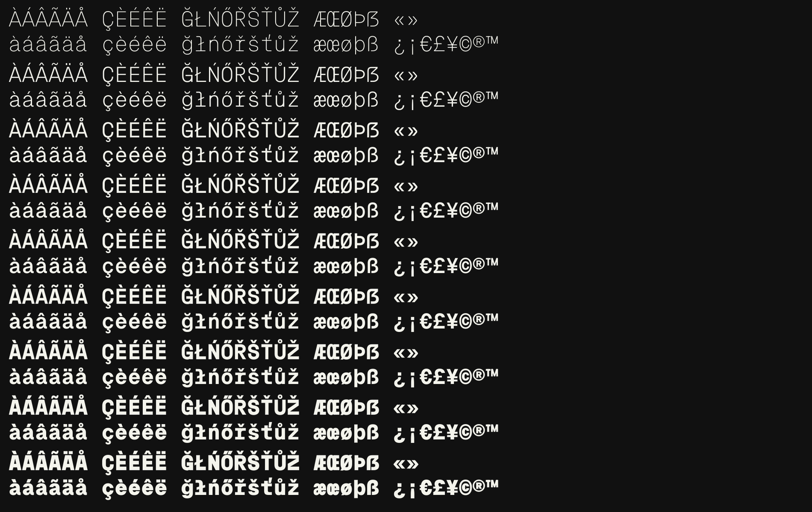

Proxy Mono is a variable monospaced typeface designed by Danny Liang.
Redrawn on a single stem weight, it sets in one even colour from Thin to Black. It keeps the wide, square-shouldered capitals of Space Mono, with a handful of letters inspired by Martian Mono and a lowercase taken from Geist Mono.
It is plain, without ink traps, for everyday use in code and in design.
It covers GF Latin Core and more: Western, Central and Eastern European languages, Vietnamese, and a wide set of symbols, arrows and currencies.
To contribute, see github.com/monoproxy/proxy-mono.